Vlucht 21
Boven het wolkendek met een slechte take-off...
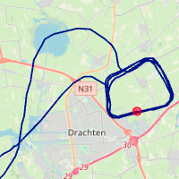
Vlucht 20
Circuit-training
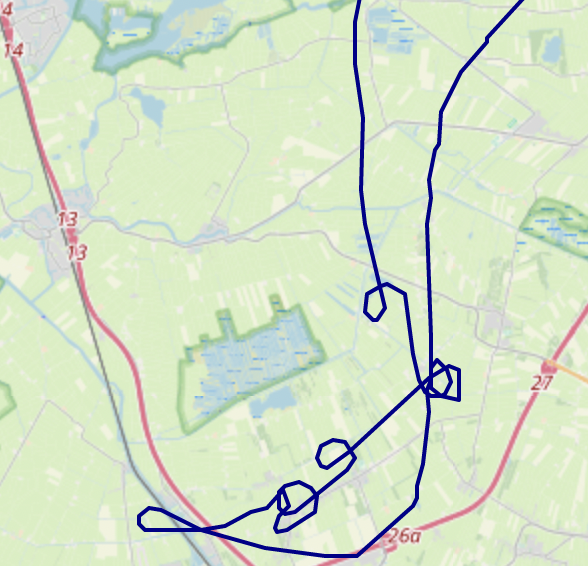
Vlucht 19
Scherpe bochten, overtrek en landingen...
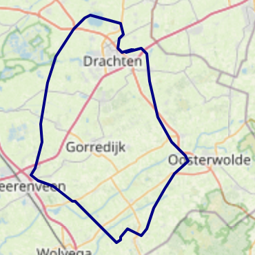
Vlucht 18
Een klein rondje met wat touch en goes.
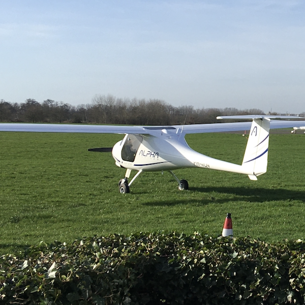
Vlucht 17
Circuit-training
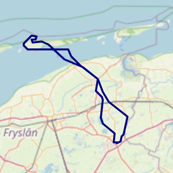
Vlucht 16
Op en neer naar Ameland...
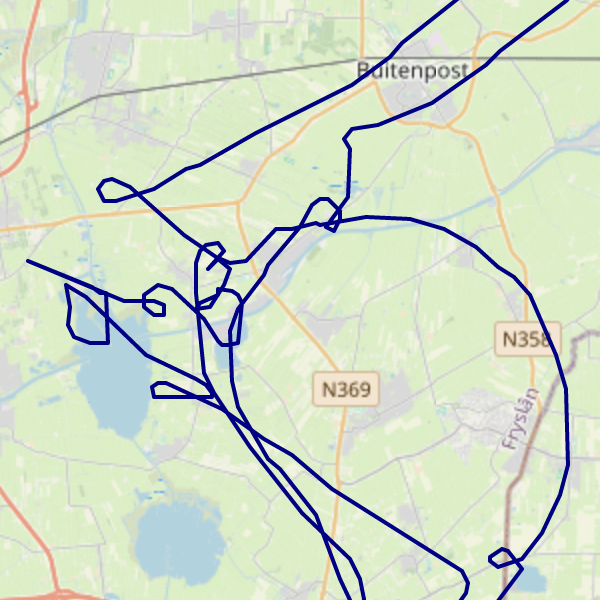
Vlucht 15
Overtrek, stijle bochten en slippen om hoogte te verliezen
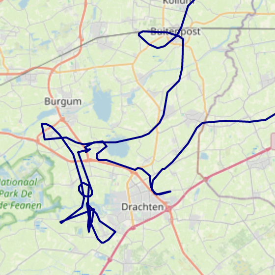
Vlucht 14
Vliegen over Zernike
Vlucht 13
Eindelijk de overtrek – helaas geen Garmin-data
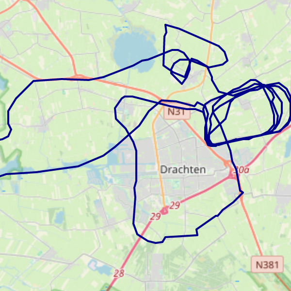
Vlucht 12
Circuit-training met behoorlijke cross-wind.
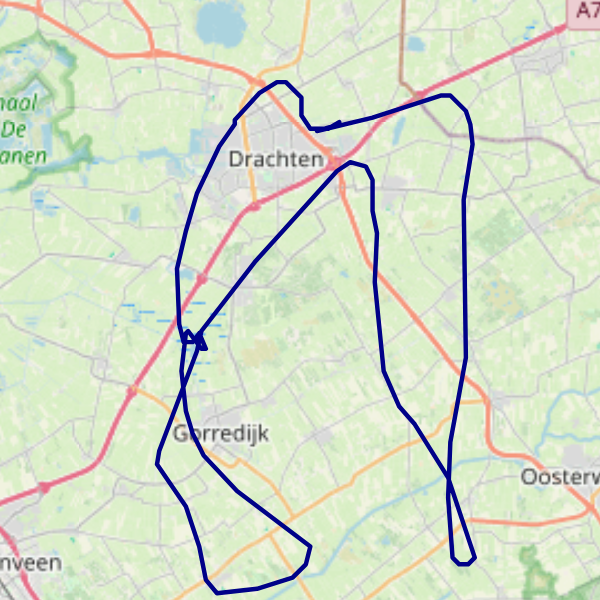
Vlucht 11
Langzame vlucht en werken met flaps.
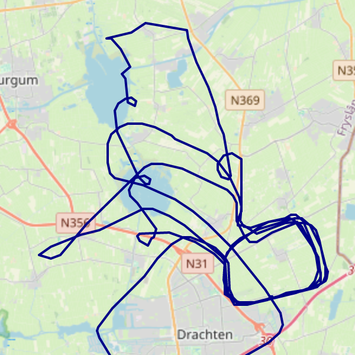
Vlucht 10
Radio telecom en nog meer circuittraining.
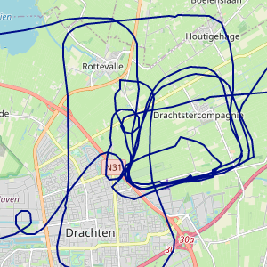
Vlucht 9
Circuittraining en scherpe bochten.
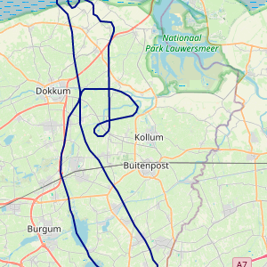
Vlucht 8
Slalom door de wolken.
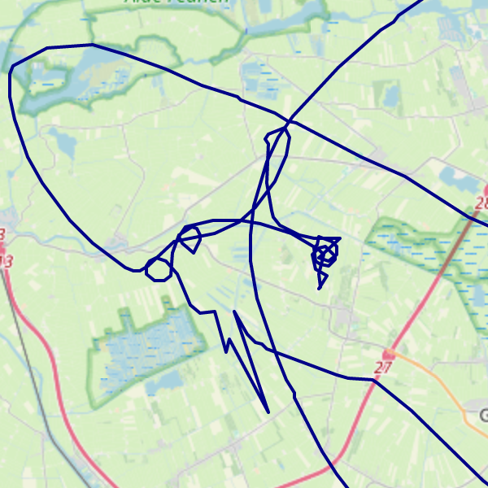
Vlucht 7
Vliegen zonder handen.

Vlucht 6
Harde wind en scherpe bochten.
Vlucht 5
Bochten, bochten, bochten...
Vlucht 4
Op en neer naar Hoogeveen.

Vlucht 3

Vlucht 2